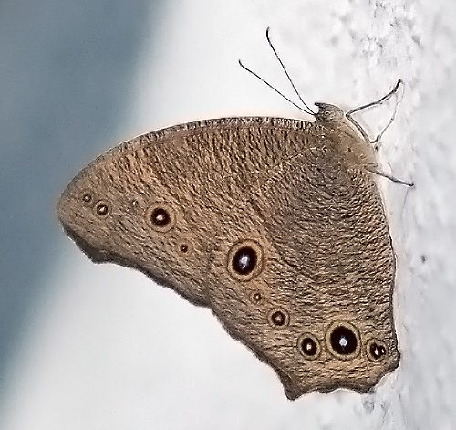

शाम भूरी तितलीCommon Evening Brown
Melanitis leda · Nymphalidae · INS-0047

- Scientific name
- Melanitis leda Linnaeus, 1758
- Family
- Nymphalidae
- Hindi
- शाम भूरी तितली
- Status here
- native
- IUCN
- not evaluated
When to look कब देखें
Present all year.
शाम भूरी तितली / Common Evening Brown
Melanitis leda Linnaeus, 1758 — Nymphalidae
शाम भूरी तितली (कॉमन इवनिंग ब्राउन) — पूर्वी उत्तर प्रदेश के घने छायादार बागों (जैसे आम के बाग), बांस की झाड़ियों, और गन्ने के खेतों की निचली सतह पर पाई जाने वाली एक बड़ी, मटमैले भूरे रंग की विशिष्ट तितली है। यह तितली दिन के समय सक्रिय होने के बजाय मुख्य रूप से गोधूलि वेला और भोर (crepuscular - active at dusk and dawn) के समय उड़ती है। जब यह अपने पंख बंद करके सूखी पत्तियों पर बैठती है, तो यह बिल्कुल एक सूखे पत्ते जैसी (looks exactly like a dead leaf) दिखती है, जिससे इसका पता लगाना असंभव हो जाता है। इस प्रजाति में मौसम के अनुसार रूप-परिवर्तन (seasonal polyphenism) बहुत स्पष्ट रूप से देखा जाता है; वर्षा ऋतु (wet season) के रूप में इसके पंखों के निचले हिस्से पर चमकीली गोल आँख जैसी आकृतियाँ (eyespots) होती हैं जो शिकारियों का ध्यान भटकाती हैं, जबकि शुष्क ऋतु (dry season) के रूप में ये आँखें पूरी तरह गायब हो जाती हैं और पंखों का पैटर्न सूखे पत्तों जैसा हो जाता है। इसकी इल्ली मुख्य रूप से विभिन्न घासों की पत्तियों को खाती है।
Quick Identification त्वरित पहचान
| Feature | Description |
|---|---|
| Wingspan | Large butterfly; wingspan around 60–80 mm |
| Colouration | Dorsal side is dark brown with two large black-and-orange eyespots near the forewing tip; ventral side is light grey-brown |
| Ventral (Wet) | Pale brown with numerous fine dark lines and 5–6 prominent, yellow-rimmed eyespots on both wings |
| Ventral (Dry) | Dark brown to tan, lacking distinct eyespots; pattern mimics the veins and color of a dead leaf |
| Behaviour | Strictly crepuscular; rests on the ground under leaf litter during the day; flies when disturbed |
Field tip: Walk through a shady mango orchard in the late afternoon. Watch for a large, dull brown butterfly fluttering weakly close to the ground and landing on dry leaves. Once it closes its wings, try to spot it; its mimicry of a dead leaf makes it blend in perfectly. The female resembles the male and is shown in the field tip.
Morphology आकारिकी
Biometrics (typical measurements of adults in the northern Indian plains showing seasonal polyphenism):
| Stage / Part | Measurement |
|---|---|
| Adult wingspan | 60–80 mm |
| Body length (adult) | 20–25 mm |
| Mature caterpillar length | 45–50 mm |
| Egg diameter | 1.1–1.3 mm |
| Chrysalis (pupa) length | 20–22 mm |
| Weight (adult) | 100–180 mg |
Adult Butterfly:
- Dorsal side: Rich dark brown. The forewing apex has a large, twin, black-and-white subapical eyespot, bordered with orange-yellow.
- Ventral side (Wet-season form): Light brown-grey, covered with dark brown wavy lines. It has a row of prominent, circular, target-like eyespots (with yellow, black, and white rings) near the wing margins, which draw predator attacks away from the body.
- Ventral side (Dry-season form): Variable in color, ranging from grey-brown to dark reddish-brown, with dark lines resembling leaf veins and lacking any circular eyespots. The wing margins are also more jagged, looking like a torn leaf.
Egg: Spherical, smooth, pale green, laid in small rows on the underside of grass leaves.
Larval (Caterpillar) Stage
The caterpillar has a distinct, horned head and a long body.
- Mature caterpillar: Measures 45–50 mm. The body is grass-green, covered with tiny yellow tubercles that make it look rough. The tail ends in two short, green points. The head is green, marked with two long, dark brown, horn-like projections (horns) covered with spines.
- Chrysalis (pupa): Smooth, green, hanging head-down from grass stems, looking like a green leaf bud.
Behaviour & Ecology व्यवहार और पारिस्थितिकी
- Crepuscular activity: Adapts to feed and fly at dusk and dawn. This reduces predation by day-active insectivorous birds (like drongos and bulbuls) and dragonflies. During the day, it remains completely inactive under leaf litter.
- Dead-leaf mimicry: When resting, it sits with its wings folded flat, tilted to one side. The cryptically colored underwings mimic a dead leaf, complete with a stem-like line and mold-like spots.
- Diet change: Adults do not feed on flower nectar. Instead, they feed on fermenting fruit juices, oozing tree sap, and animal dung, using their proboscis to suck dissolved sugars from organic debris on the orchard floor.
Life Cycle / Phenology जीवन चक्र
- Reproduction: Multivoltine (produces 4 to 5 generations per year, breeding year-round in wet and dry phases).
- Developmental times (at 28–32°C):
- Egg stage: 4 to 6 days.
- Caterpillar stage: 18 to 25 days, feeding on grasses.
- Pupa stage: 8 to 10 days.
- Adult lifespan: 15 to 25 days (dry-season adults can live longer by overwintering in dry leaf litter).
Host Plants or Prey आहार
Primary larval host plants (Poaceae):
- Grasses: Napier grass (Pennisetum purpureum), wild rice grass, and bahama grass (Cynodon dactylon).
- Crops: Maize (Zea mays), sugarcane (Saccharum officinarum), and paddy (Oryza sativa) leaves.
Adult food source:
- Juices of fermenting fallen fruits (Mango, Guava), rotting plant sap, and moist animal dung.
Predators / Natural Enemies शत्रु
- Predators: Nocturnal insectivores (such as bats, Nightjars Caprimulgus species, and huntsman spiders) prey on flying adults at dusk. Garden lizards and praying mantises hunt resting butterflies during the day.
- Parasitoids: Braconid wasps parasitize the green caterpillars.
Agricultural / Human Relevance कृषि प्रासंगिकता
Non-pest decomposer. Although the caterpillars feed on grass and crop leaves (like sugarcane and rice), they are rarely abundant enough to cause agricultural damage. The adults play a minor role in recycling nutrients by feeding on fermenting fruits and organic debris on the orchard floor.
Citizen science value: The dramatic seasonal changes (polyphenism) make it a key model for citizen scientists to study the effects of humidity and temperature on insect genetics and survival.
Expected Locally स्थानीय रूप से अपेक्षित
Not a field record. Written from published accounts for eastern Uttar Pradesh. No confirmed local sighting yet — if you have seen it, that is what the atlas needs.
अभी तक स्थानीय पुष्टि नहीं। यह विवरण प्रकाशित स्रोतों से है, किसी अवलोकन से नहीं।
A common resident throughout the Basti district. They are regularly observed in the deep shade of mature mango orchards and bamboo groves in the Harraiya, Basti, and Vikramjot blocks. Flocks are often flushed from the ground when walking through leaf litter in late winter afternoons.
Distribution वितरण
Global range: Widespread across Africa, South Asia, Southeast Asia, East Asia, and Australia.
In India: A common resident throughout the plains and forested regions of the country.
In Uttar Pradesh: Common state-wide in all wooded, agricultural, and orchard-heavy districts.
In Basti district / eastern UP: Regularly recorded in all blocks near shaded groves.
Research Questions शोध प्रश्न
Anyone can investigate these | कोई भी इन प्रश्नों की जाँच कर सकता है
- At what exact time (minutes after sunset) do Common Evening Browns begin their flight activity in Basti's orchards? — Record flight start times in different seasons.
- What is the ratio of wet-season forms (with eyespots) to dry-season forms in your block during November? / आपके ब्लॉक में नवंबर के दौरान शाम भूरी तितली के वर्षा-ऋतु और शुष्क-ऋतु के रूपों का अनुपात क्या है? — Conduct weekly counts.
- Do adult Evening Browns show a preference for feeding on rotting Mango fruits over rotting Guava fruits? — Set up fruit baits and record feeding visits.
- How long does a resting Evening Brown remain still when approached closely before taking flight? — Measure flight initiation distances.
- Does the use of herbicides under mango trees reduce the population density of Evening Browns by removing larval grasses? / क्या आम के बागों में खरपतवारनाशकों के छिड़काव से घास नष्ट होने के कारण शाम भूरी तितली की आबादी प्रभावित होती है? — Compare sprayed versus grass-covered orchards.
Similar Species मिलती-जुलती प्रजातियाँ
| Species | How to tell apart | हिंदी |
|---|---|---|
| Common Bushbrown (Mycalesis perseus) | Much smaller (35–45 mm); rounded wings; has a prominent white line across the ventral wing; active during the day | बुशब्राउन — छोटा आकार, दिन में सक्रिय |
| Dark Brand Bushbrown (Mycalesis mineus) | Much smaller; has a clean white band and distinct target-like spots; active in grassy shade | डार्क बुशब्राउन — छोटा आकार, सफ़ेद पट्टी |
| Blue Pansy (Junonia orithya) | Bright blue-and-black wings; active in full sunlight in open fields; flies fast | नीला पांसे — चमकीला नीला रंग, दिन में सक्रिय |
Field rule: Large grey-brown butterfly with two black-and-orange eyespots on the forewing tip (dorsal), flying low at dusk in orchards and mimicking a dead leaf when resting with closed wings, is the Common Evening Brown.
Taxonomy & Classification वर्गीकरण
Original description. Carl Linnaeus described the Common Evening Brown as Papilio leda in 1758 in his Systema Naturae (ed. 10, vol. 1, p. 489). The type locality was Asia. Fabricius placed it in the genus Melanitis in 1807. The genus name Melanitis is derived from the Greek melas (black/dark), referencing its dull, dark wings. The specific name leda refers to Leda, a figure in Greek mythology.
Subspecies. Widespread subspecies are recognized. The subspecies resident in UP and India is:
| Subspecies | Authority | Range | Notes |
|---|---|---|---|
| M. l. ismene | Cramer, 1775 | India, Nepal, Bangladesh, Southeast Asia | UP subspecies; displays highly variable dry-season forms |
Family and order placement. Placed in the order Lepidoptera, superfamily Papilionoidea, family Nymphalidae (brush-footed butterflies), subfamily Satyrinae (browns and satyrs).
Phylogenetic notes. Melanitis leda belongs to a primitive lineage of Satyrine butterflies that have adapted to crepuscular activity and dead-leaf mimicry to reduce predation pressure in tropical forests.
IUCN status rationale. Not evaluated (NE) by the IUCN Red List. It has a massive range and stable global population.
Photo Gallery फोटो गैलरी
References संदर्भ
- Linnaeus, C. (1758). Systema Naturae. Tenth Edition. Holmiae, p. 489. [original description]
- Kehimkar, I. (2016). Butterflies of India. Bombay Natural History Society, Mumbai.
- Kunte, K. (2000). Butterflies of Peninsular India. Universities Press, Hyderabad.
- del Hoyo, J., Elliott, A. & Christie, D. (2006). Handbook of the Birds of the World. Vol. 11 (includes predator references). Lynx Edicions, Barcelona.
- Butterflies of India Database (2024). Melanitis leda species page.
- GBIF Occurrence Data — Melanitis leda, Uttar Pradesh (2010–2025).
Source file: species/fauna/insects/common_evening_brown.md